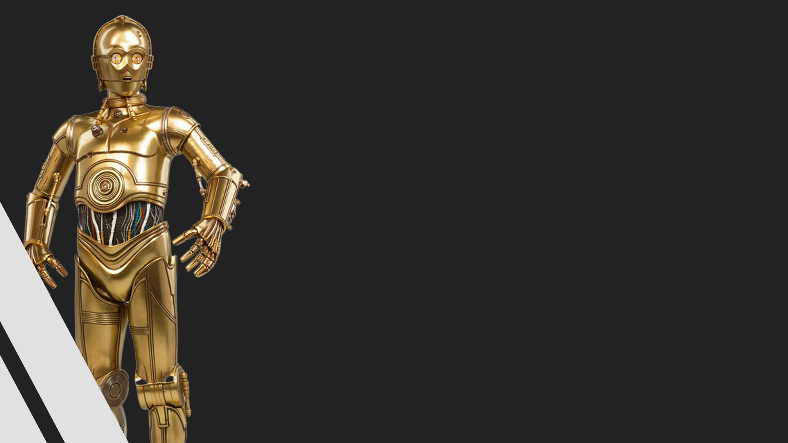
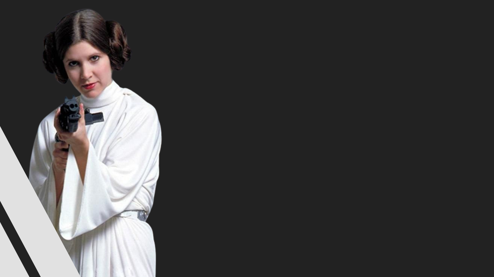

Rebeldes
Rebeldes
O que é?
É uma coalização interestelar sem estado fictícia de dissidentes republicanos, facções revolucionárias e sistemas células clandestinas anti-imperialistas em um movimento de resistência contra o império Galáctico.
Principais integrantes

Luke
Skywalker
Um homem humano sensível à Força, foi um lendário Mestre Jedi que lutou na Guerra Civil Galáctica durante o reinado do Império Galáctico. Junto com seus companheiros, a princesa Leia Organa e o general Han Solo, Skywalker serviu como um revolucionário ao lado da Aliança para Restauração da República uma organização comprometida com a queda do Império Galáctico e a restauração da democracia.

C-3PO
Foi um droide de protocolo unidade 3PO projetado para interagir com organismos, programado primariamente para etiqueta e protocolo. Ele era fluente em mais de seis milhões de formas de comunicação e desenvolveu uma personalidade espalhafatosa e propensa à preocupação durante várias décadas de operação. Junto com seu parceiro, o droide astromecânico R2-D2
Cassian
Jeron Andor
Foi um Humano que serviu como um oficial de inteligência para a Aliança para Restauração da República durante a Guerra Civil Galáctica. Capitão Andor estava servindo na base rebelde em Yavin 4 quando Jyn Erso foi designada por Mon Mothma, uma líder da Aliança Rebelde, para uma missão que se tornaria o roubo dos planos da Estrela da Morte.
chewbacca
(Ou "Chewie", como ele era conhecido por seus amigos) foi um Wookiee masculino guerreiro, contrabandista e co-piloto da Espaçonave de Han Solo, a Millennium Falcon. Nascido no planeta de Kashyyyk, Chewbacca foi um veterano das Guerras Clônicas e um herói da Aliança para a Restauração da República.
han
solo
Solo e Chewbacca viriam a juntar-se à Aliança Rebelde depois de resgatar a Princesa Leia Organa de Alderaan da Estrela da Morte, uma estação de batalha construída pelo Império Galáctico capaz de destruir planetas inteiros, e auxiliando na destruição da mesma estação de batalha em um confronto mais tarde.

leia
leia
organela solo
O filme começa três anos após o início das Guerras Clônicas. Os Cavaleiros Jedi estão espalhados por toda a galáxia, liderando uma guerra maciça contra os Separatistas. O Conselho Jedi incumbe o Mestre Jedi Obi-Wan Kenobi de eliminar o notório General Grievous, líder do Exército Separatista.
mon
Mothma
Foi uma Humana política e líder revolucionária que serviu ao Senado Galáctico e ao Senado Imperial como representante de Chandrila, à Aliança para Restauração da República como líder e à Nova República como primeira Chanceler.
sabine
wren
Era uma Mandaloriana humana expert em armamentos que esteve na ativa durante o reino do Imperador Galáctico Sheev Palpatine por volta de cinco anos antes da Batalha de Yavin. Nascida no Clã Wren da Casa Vizsla e treinada como uma guereira Mandaloriana desde pequena, ela foi estudante da Academia Imperial em Mandalore junto da colega cadete Ketsu Onyo antes de se desiludir com o Império Galáctico e deserdar seu posto para se tornar caçadora de recompensas junto com Onyo.
onde a aliança apareceu na saga?
O Império Contra-Ataca (1980) e Retorno dos Jedi (1983)
As origens da aliança foram mencionadas no Episódio III: A Vingança dos Sith (2005)
e suas atividades iniciais são apresentadas na série de televisão Rebels da Disney XD e na antologia do filme Rogue One (2016).